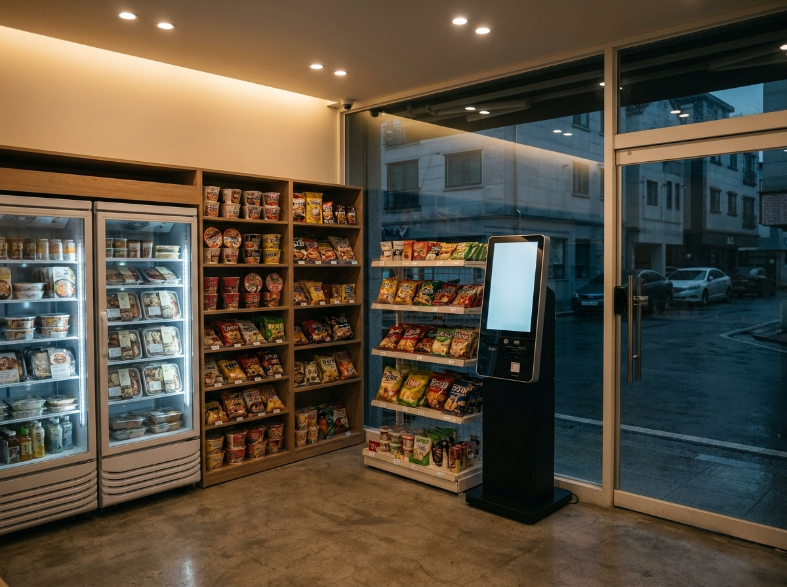
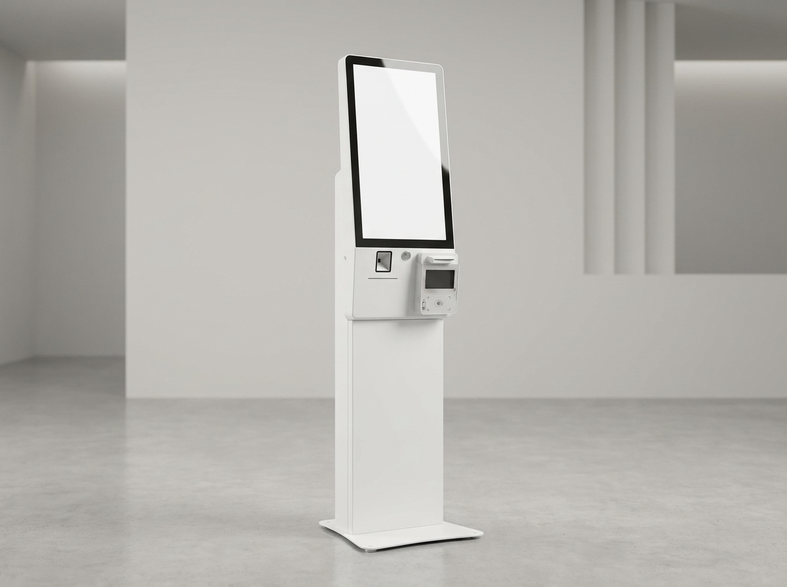
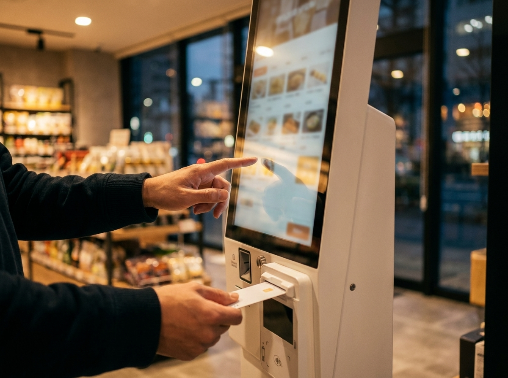

무인매장 창업 전 꼭 확인할 5가지 — 24시간 매장, 정말 손 안 가고 될까?
무인매장은 인건비를 줄이고 24시간 매출을 만든다는 점에서 매력적입니다. 하지만 "무인"이라는 말만 믿고 시작하면 재고 관리, 도난, 결제 사고에서 예상 못 한 비용이 새어 나갑니다. 수도권에서 14년간 3만여 매장에 결제·주문 장비를 설치하며 지켜본 결과, 무인매장의 성패는 오픈 전에 무엇을 확인했느냐로 거의 갈립니다. 창업을 결심하기 전에 반드시 짚어야 할 5가지를 정리했습니다.

1. 무인이 되는 업종부터 확인하세요
모든 업종이 무인으로 되는 것은 아닙니다. 밀키트·아이스크림·과자·문구·세탁·스터디카페처럼 표준화된 상품이나 공간을 파는 업종은 무인에 잘 맞습니다. 반대로 조리·접객이 필요한 업종은 완전 무인이 어렵습니다.
특히 담배와 주류는 무인 판매가 법으로 제한됩니다. 청소년 구매를 막기 위한 성인 인증이 필요하기 때문입니다. 판매 품목에 이런 항목이 있다면 성인 인증 장치나 별도 절차가 필수이므로, 시작 전에 관할 지자체와 관련 법규를 반드시 확인하세요.
2. 주문·결제 시스템이 매장의 얼굴입니다
무인매장에서 손님이 유일하게 마주하는 직원은 키오스크입니다. 주문이 헷갈리거나 결제가 한 번씩 튕기면, 손님은 물어볼 사람도 없이 그냥 나가버립니다. 그래서 무인일수록 결제·주문 장비의 안정성이 매출을 좌우합니다.
요즘은 카드는 물론 애플페이·삼성페이·네이버페이·카카오페이 같은 간편결제까지 한 대로 받는 것이 기본입니다. 또한 2024년부터 일정 규모 이상 매장의 키오스크에는 배리어프리(장애인·고령자 접근성) 기능이 단계적으로 의무화되고 있으니, 처음부터 이를 갖춘 기기를 고르는 편이 유리합니다.

3. 도난·부정결제, "무인"의 진짜 리스크
무인매장의 가장 큰 고민은 사람이 없다는 점 그 자체입니다. 재고가 조용히 사라지거나, 결제 없이 물건만 들고 나가는 일이 생깁니다.
- CCTV는 선택이 아니라 필수입니다. 사각지대 없이 계산대와 출입구를 함께 담아야 합니다.
- 결제 단말과 키오스크는 정품·정상 등록 기기를 써야 결제 분쟁과 정산 오류를 줄일 수 있습니다.
- 고가 상품은 별도 잠금 진열장이나 알림 센서로 관리하는 편이 안전합니다.
CCTV 설치와 개인정보 안내문 부착은 개인정보보호법과도 얽혀 있으니, 촬영 안내 문구를 눈에 띄게 붙여 두는 것이 좋습니다.
4. "완전 무인"은 없습니다 — 사람 손이 필요한 일
무인매장이라고 해서 손이 아예 안 가는 것은 아닙니다. 실제로는 이런 일이 매일 또는 주기적으로 생깁니다.
| 구분 | 무인이라도 필요한 일 | 주기 |
|---|---|---|
| 재고 | 상품 보충·유통기한 점검 | 매일~격일 |
| 청소 | 매장·집기 위생 관리 | 매일 |
| 장비 | 키오스크·냉장고 상태 확인 | 수시 |
| CS | 결제 오류·환불 문의 응대 | 발생 시 |
즉 무인매장은 "직원을 없애는 것"이 아니라 매장에 상주하지 않아도 되도록 운영을 설계하는 것에 가깝습니다. 여러 매장을 순회 관리하는 형태로 접근하면 인건비 절감 효과가 실제로 커집니다.
5. 초기비용·입지·인허가를 함께 계산하세요
무인매장은 인건비가 낮은 대신 초기 장비·인테리어 비용이 앞단에 몰립니다. 키오스크, 결제 단말, 냉장·진열 집기, CCTV, 인테리어가 한 번에 들어가기 때문입니다. 여기에 업종별 인허가(식품·위생 등)까지 감안해야 실제 손익 시점이 보입니다.
입지도 유인매장과 기준이 다릅니다. 24시간 매출을 노리는 만큼 야간 유동인구와 안전, 주차·접근성이 중요합니다. 장비 견적만 따로 보지 말고, 입지·인허가·운영 동선을 묶어 계산하는 것이 실패를 줄이는 길입니다.

자주 묻는 질문
Q. 무인매장은 정말 인건비가 안 드나요?
상주 직원이 없을 뿐, 재고 보충·청소·관리 인력은 필요합니다. 여러 매장을 묶어 순회 관리할 때 절감 효과가 가장 큽니다.
Q. 키오스크 한 대로 카드와 간편결제를 다 받을 수 있나요?
네. 요즘 키오스크·결제 단말은 카드와 애플페이·삼성페이·네이버페이·카카오페이 등 간편결제를 함께 지원하는 것이 일반적입니다. 매장 상황에 맞는 구성은 상담 시 안내해 드립니다.
Q. 담배·주류도 무인으로 팔 수 있나요?
성인 인증이 필요해 무인 판매가 제한됩니다. 취급 예정이라면 성인 인증 방식과 관련 법규를 관할 기관에 먼저 확인하세요.
Q. 장비는 사는 게 나을까요, 렌탈이 나을까요?
초기 자금 여력과 운영 기간에 따라 다릅니다. 매장 규모와 예상 매출을 기준으로 구매·렌탈을 함께 비교해 보시길 권합니다.
무인매장, 장비부터 제대로 잡으세요
무인매장의 매출은 결국 손님이 막힘없이 주문하고 결제하는 경험에서 나옵니다. 누리네트웍스는 수도권에서 직접 설치·A/S하며, 배리어프리 키오스크부터 카드·간편결제 단말까지 매장에 맞게 구성해 드립니다. 거품 뺀 직접 공급가로 상담해 드리니, 창업 준비 단계에서 편하게 문의 주세요.
- 📞 전화상담 1544-7754
- 🌐 홈페이지 nwpos.co.kr